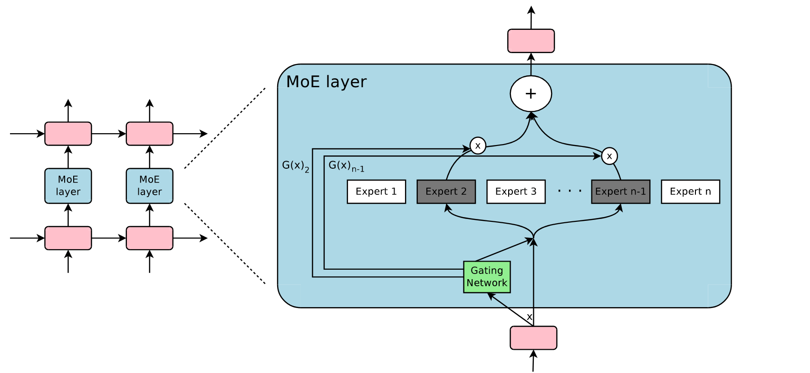
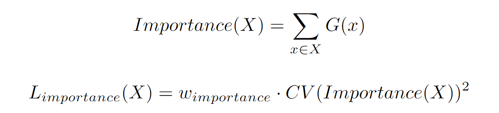
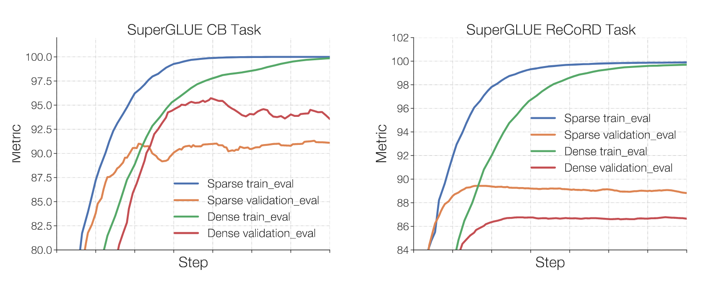

MoE 相关工作、研究进展总结
MoE
今天总结一下最近读过的 MoE 相关的论文、研究进展。
简介
混合专家网络（Mixture-of-Experts，MoE），旨在通过条件计算增加模型容量。具体来说，是对不同的输入激活网络中的不同部分，在控制运算量，即 FLOPs 不变的前提，显著增加模型参数，以达到增加容量的效果。这是一种稀疏网络架构，网络中只有部分参数被激活，与之对应的是传统的密集网络，每个输入都会激活所有参数。
一个例子如下所示。存在 n 个不同的专家，每个专家都是个独立的 FFN，不共享参数。门控网络对每个 token 计算专家网络上的概率分布，取 top2 专家输出的加权和作为 MoE 层的输出。

实现和训练过程中需要注意以下事项：
稀疏噪声 Top-k 门控
计算 logits 时加入随机噪声，使得每个专家都有激活的机会。
将 Top-k 之外的 logits 置 0，降低 softmax 开销。
负载均衡
门控网络倾向于为特定的少数专家提供较大的权重。事实上，刚开始受到关注的某些专家会训练地更快，从而会更容易被选择。因此，需要额外的损失项保证专家间的负载均衡。
原始论文中使用了专家的重要性（batch 内每个 token 在同一专家的分数之和），构造辅助损失，保证每个专家收到的 batch token 的重要性相近，又设计了额外的负载损失保证每个专家收到的 token 数量近似。仔细区分的话，重要性损失保证了每个专家都有近似的训练进度，负载损失保证了专家间的负载近似平衡。
下面是重要性损失的公式。负载损失类似。采用这样复杂的损失形式是因为每个专家激活次数是离散量、不可微。

混合并行
一般而言，大模型需要分布式数据并行训练。
专家、参数过多时，模型难以容纳在单张卡上。需要做模型并行，将一个或多个专家放在一张卡上，不同的卡保存不同的专家。在门控网络计算完毕，得到每个 token 对应的专家后，通过多卡通信，将每个 token 转移到专家对应的设备上进行计算。
任务 & 数据集
- 语言模型：百亿 Google News、维基百科
- NLU 常见基准：GLUE、SuperGLUE、SQuAD
- 摘要：XSum
- 问答：CB Web QA、CB Natural QA、CB Trivia QA
- 翻译：WMT'14
问题
- Top-k 门控：K 过大会增加通信开销，过小又可能损失性能（缺乏了多位专家的对比）
- 负载均衡：辅助损失形式复杂，且引入了额外的优化目标
- 模型并行：分布式模型并行需要编程上的模型划分、通信、带来额外工程开销
- 训练稳定性：稀疏模型可能存在训练不稳定，即 loss 发散的问题
- 难以推理部署：稀疏大模型需要大量设备才能推理部署
Switch Transformer
- 多语任务上，取得了相较于密集 T5-XXL 4x 的加速
门控网络
- 主张：原始论文中认为至少需要激活两名专家才能学习到专家间的差异，才能使训练有效。论文主张只使用一个专家，既保证了质量又简化了路由计算，性能更好。
- 使用 Top1 门控，降低通信开销。
负载均衡
- 动机：简化负载均衡辅助损失，为 tpu 训练，固定专家的最大容量
- 使用容量因子静态设置专家容量，溢出的 token 不激活任何专家，退化为残差连接。
- 简化辅助损失：使用每个专家分到的 token 比例、重要性的点积构造简化版的辅助损失。
N 为专家数，T 为 token 数，\(\mathcal B\) 为 batch 内的所有 token，\(f_i\) 为每个专家分到的 token 比例，\(P_i\) 为归一化的专家重要性。理想情况下，二者均应该为 \(1/N\)。虽然 \(f_i\) 不可微，但是 \(P_i\) 是可微的。论文称该损失在均匀分布下是最小的。

蒸馏
- 动机：将大型稀疏模型蒸馏为小型密集模型
- 使用密集模型初始化非专家参数
- 使用 25% 教师概率 + 75% 真实标签混合蒸馏
- 5% 的参数保留 30% 的质量
稳定性
- 仅将路由器内部的计算使用 float32 精度，其余使用 bfloat16 不变，兼顾稳定性和效率
- 降低参数初始化的标准差，更稳定
- 仅提高专家网络的 dropout，避免过拟合。如果增加所有参数的 dropout 会损害性能。
Hash Layers
- 在两个数据集上困惑度优于 Switch Transformer 约 0.5。
负载均衡
- 动机：不使用辅助损失达到负载均衡
- 通过随机 Hash、聚类 Hash、分散 Hash 多种方法，将建立 token - 专家间的固定 Hash 关系
- 使用多头 Hash：将专家和 embedding 分段，做 Hash、计算后再拼接到一起

BASE Layers
负载均衡
- 动机：不使用辅助损失达到负载均衡
- 将负载均衡问题定义为线性分配问题，每个 token 和 expert 点积计算分数，将分数认作将 token 分配个 exper 的收益，按照成熟的线性分配算法求解。为避免专家、token 过多时求解全局最优的开销过大，论文并将其 token 分成若干个组，求解组内的线性分配问题。
- 线性分配问题形如：有 n 个 token 和 m 个 expert，矩阵元素 A (n,m) 是将 token n 分配给专家 m 得到的收益。满足每个专家分配 token 个数相等时，最高收益的分配方案。
- 需要两次 all2all 操作，第一次将 token 映射到随机的 worker，worker 求解组内线性分配问题，第二次 worker 将 token 发送给对应的 expert。

DENSE-TO-SPARSE GATE
提高训练效率
- 动机：认为专家和稀疏门控的联合训练对模型精度产生负面影响。通过将门控由密集逐渐转为稀疏，将专家和稀疏门的训练解耦
- 具体是通过调节门控 softmax 的温度，由大而小，将大于某个分数阈值的专家均激活
- 由于密集训练完毕后，专家间自然地就存在分布不均衡，因此没有采用负载均衡控制算法
- 结果：
- 同样验证集困惑度，取得比 switch transformer 2x 的训练加速和 1.25x 的 FLOPs 加速
- 有无负载均衡损失的效果类似，最终专家间负载基本均衡


有无辅助损失的对比
Tricks for Training Sparse Translation Models
- 在两个数据集上改善了低资源任务的性能
多任务学习
- 动机：大容量的稀疏模型可能会在少资源任务上过拟合。主张这是由于专家很早就开始专业化，很少改变专业化。

French 为高资源任务，Romanian 为低资源语言
- 温度采样：训练过程中，按不同温度采样不同任务样本，逐渐加热温度，增大从低资源任务采样数据的比例
- 密集预训练：刚开始时固定步数内，专家参数共享进行密集预训练，提高了收敛性

专家的过早专业化现象得到了遏制
Efficient Large Scale Language Modeling with Mixtures of Experts
关于自回归 MoE 语言模型各种设置的实证研究。
一些结论：
- 相同验证集性能下，MoE 比相同 FLOPs 的密集模型训练速度更快，对域内验证数据快 8-16 倍，域外数据快 2-4 倍。
- MoE 的零样本学习能力优于密集模型，但差距随着训练推进减小
- MoE 从零样本到少样本间取得的性能提升差于密集模型
- MoE 的微调性能差于密集模型，且在部分数据集上存在微调后性能变差的情况
稳定性
没有像 Switch Transformer 一样调整初始化的权重，而是增大了每个 expert 的学习率。因为与密集的数据并行相比，每个专家接收到的 token batch 减少了 E 倍，进而将梯度减小了 \(\sqrt E\) 倍。E 为专家数量。因此论文主张将学习率增大 \(\sqrt E\) 倍。
GShard
- 一个模块，用户使用 api 为关键张量添加注释，模块会自动实现切分和并行，避免人工编程实现的工程开销。将模型设计和实现分离。
- 使用 SPMD 而非 MPMD，降低设备增多时的编译开销
DeepSpeed-MoE
提供了端到端的 MoE 训练和推理的解决方案，作为 DeepSpeed 库的一部分，支持最高 3.7 倍的 MoE 压缩，7.3 倍的推理优化。
提出了金字塔残差 MoE（PR-MoE），以更少的参数取得了比传统 MoE 更优的性能。
压缩参数
实验证明，网络深层使用专家效果优于浅层，因此，论文提出由浅至深逐渐增加专家的数量。也就是金字塔型。
近似 Top2
Top2 门控虽然能带来收益，但是引入了很多训练、通信开销。论文认为，top2 门控优于 top1 门控的原因是，分数第二大的专家有时可以纠正第一个专家的错误。因此，论文提出了可以固定一个专家，从剩下的专家里选择最优的。换而言之，在专家之外添加了一个所有 token 都需要经过的 MLP，近似得到 top2 门控的性能。

蒸馏稀疏模型
- 将知识蒸馏到专家更少的稀疏模型里，而非传统的密集模型，保留稀疏模型训练和推理的优势
- 蒸馏过程中逐渐减小蒸馏的影响，避免损害性能

完全使用 KD 损失会在训练近结束时损失性能
ST-MoE
旨在解决 MoE 训练过程中的不稳定性以及微调过程中的质量不确定性。
论文提出了一个 269B 的稀疏模型，实现了 SOTA
稳定性
论文尝试了三种常见的提高训练稳定性的方法：
- 移除乘法交互：去除均方根尺度参数、GEGLU 激活
- 添加噪声
- 梯度裁剪
虽然能够提升稳定性， 但均会损害模型质量
论文提出了一种路由 z-loss，约束梯度，其中，B 是 batch 中 token 数量，N 是专家的数量，
x 是路由器接收的 logits。该 loss 惩罚了门控网络中的大的 logits，类似 l2 正则项。

路由 z-loss 能提升稳定性，还能稍微改善模型质量。
微调
- 论文认为，稀疏模型微调效果差的原因是其倾向于过拟合。实验也证明，稀疏模型更快微调收敛，证实稀疏模型在数据分布变化时可以高效地适应优化。大任务上微调可以取得比密集模型更性能，但是在较小的任务上差于密集模型

- 调节 expert 的 dropout 可提升泛化性能
- MoE 只微调非专家参数和微调所有参数性能类似。只微调非专家参数可以加速训练、减小显存。
- 密集模型和 MoE 的最优微调超参有较大差别，直接影响最后性能，不能直接照搬。
丢弃 token 健壮性
微调质量不会因为 10% 的 token 丢弃率受到显著性能影响。负载不平衡可能不会显着影响模型质量。